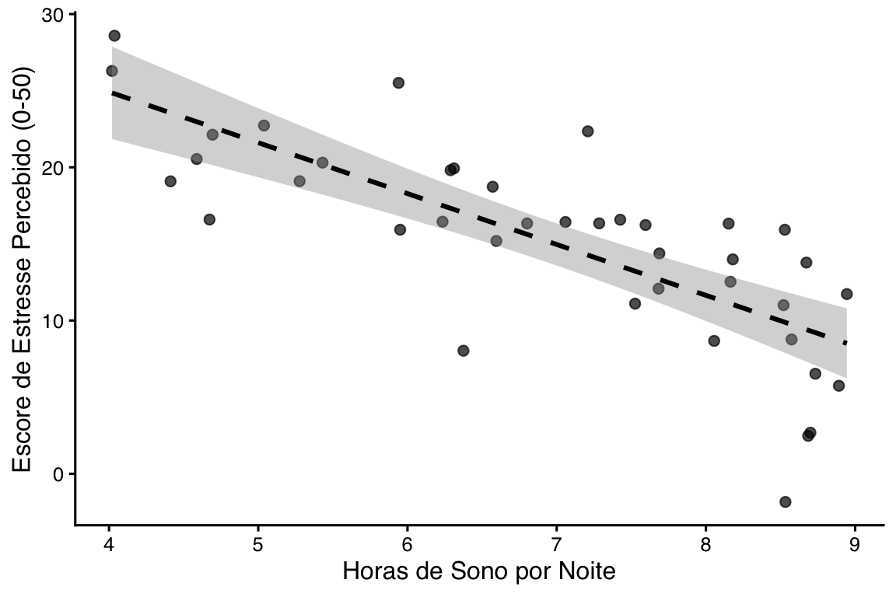
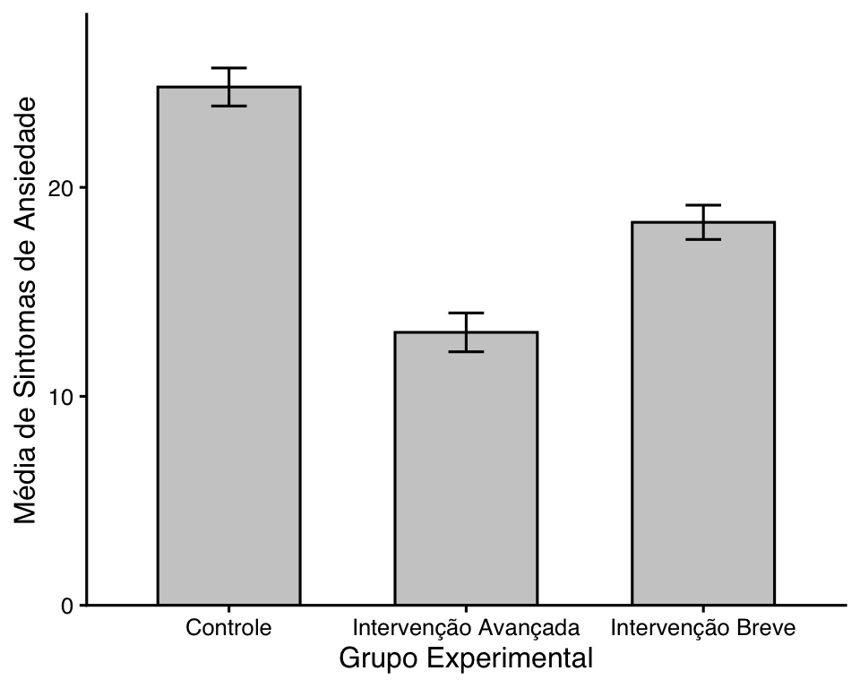

library(tidyverse)
library(papaja)Visualização de dados
Introdução à gramática de gráficos (ggplot2)
O pacote ggplot2 é fundamentado na gramática de gráficos (Wilkinson, 2005), uma abordagem teórica que decompõe um gráfico em componentes independentes e estruturados em camadas. Compreender essa gramática permite criar qualquer tipo de visualização combinando os seguintes blocos de construção:
- Dados (Data): O conjunto de dados bruto que você deseja visualizar. No
ggplot2, este dado idealmente deve estar no formato tidy (organizado), onde cada linha representa uma observação e cada coluna uma variável. - Mapeamento Estético (Aesthetics – aes): Define como as variáveis dos seus dados são mapeadas para propriedades visuais do gráfico. Exemplos incluem o eixo horizontal (
x), eixo vertical (y), cor do preenchimento (fill), cor da linha (color), formato do ponto (shape) e tamanho (size). - Geometria (Geometries – geom): Especifica a forma física que os dados assumirão na tela. É a camada que define o tipo de gráfico. Exemplos:
geom_point()para dispersão,geom_bar()ougeom_col()para barras, egeom_boxplot()para diagramas de caixa. - Estatísticas (Statistical Transformations – stat): Transformações computadas sobre os dados antes da plotagem. Por exemplo, calcular a média e o intervalo de confiança ou ajustar uma reta de regressão linear (
geom_smooth(method = "lm")). - Escalas (Scales): Controlam a correspondência entre os dados e os atributos estéticos. Elas determinam os limites dos eixos, os intervalos das quebras numéricas (
scale_y_continuous()) e os mapeamentos de cores (transformar categorias em tons de cinza ou paletas acessíveis). - Sistemas de Coordenadas (Coordinates): Mapeiam a posição dos objetos no plano do gráfico. O padrão é o sistema Cartesiano (
coord_cartesian()), mas pode ser alterado para coordenadas polares ou inversões de eixos (coord_flip()). - Facetas (Facets): Permitem dividir os dados em múltiplos subgráficos (painéis) com base em variáveis categóricas utilizando
facet_wrap()oufacet_grid(). - Temas (Themes): Controlam os elementos não-estatísticos e puramente estéticos do gráfico, como fontes, cor de fundo, presença ou ausência de linhas de grade e posicionamento da legenda.
Princípios visuais da APA 7
A apa2020publication possui regras específicas para figuras e gráficos. Tais gráficos devem ser o mais limpas e informativas possível. Os principais requisitos incluem:
- Ausência de linhas de grade: Grades de fundo (gridlines) verticais ou horizontais devem ser removidas.
- Contraste nítido: Utilizar escala de cinza ou paletas de cores acessíveis e de alto contraste.
- Tipografia consistente: Fontes sem serifa (como Arial) ou com serifa (como Times New Roman), variando de 8pt a 14pt.
- Rótulos claros: Eixos devem conter o nome da variável e, se aplicável, sua unidade de medida ou escala.
Gráfico de dispersão (correlação)
O gráfico de dispersão (scatterplot) é ideal para visualizar a relação entre duas variáveis contínuas. Vamos cruzar o nível de Estresse Percebido com as horas de Sono Autorrelatadas.
Para deixar o gráfico no padrão APA, usamos o theme_classic() como base e ajustamos as fontes.
# Dados simulados dados de 40 participantes
set.seed(42)
dados_sono <- tibble(
sono_horas = runif(40, 4, 9),
estresse = 40 - (sono_horas * 3.5) + rnorm(40, 0, 4)
)
# Construindo o gráfico com ggplot2 e pipe nativo
dados_sono |>
ggplot(aes(x = sono_horas, y = estresse)) +
geom_point(size = 2, alpha = 0.7) +
geom_smooth(method = "lm", color = "black", se = TRUE, linetype = "dashed") +
labs(
x = "Horas de Sono por Noite",
y = "Escore de Estresse Percebido (0-50)"
) +
theme_classic(base_size = 12) +
theme(
text = element_text(family = "sans"),
axis.text = element_text(color = "black")
)
Gráfico de barras com intervalos de confiança (comparação de grupos)
Mostrar apenas as barras de média sem indicar a variabilidade dos dados é uma prática ruim na ciência. Sempre precisamos incluir barras de erro (representando o Desvio-Padrão, Erro-Padrão ou Intervalo de Confiança de 95%).
No exemplo abaixo, usamos o dplyr para calcular a média e o erro-padrão e passamos o resultado diretamente para o ggplot2 usando o pipe nativo.
# Simulando dados experimentais
dados_experimento <- tibble(
grupo = rep(c("Controle", "Intervenção Breve", "Intervenção Avançada"), each = 20),
ansiedade = c(rnorm(20, 24, 5), rnorm(20, 18, 4), rnorm(20, 13, 4))
)
# Fluxo unificado: Processamento -> Sumarização -> Gráfico
dados_experimento |>
group_by(grupo) |>
summarise(
media = mean(ansiedade),
sd_ans = sd(ansiedade),
n_part = n(),
erro_padrao = sd_ans / sqrt(n_part)
) |>
ggplot(aes(x = grupo, y = media)) +
# fill = grupo gera barras cinzas/padrão, color = "black" cria a borda
geom_bar(stat = "identity", fill = "grey80", color = "black", width = 0.6) +
geom_errorbar(
aes(ymin = media - erro_padrao, ymax = media + erro_padrao),
width = 0.15,
color = "black"
) +
labs(
x = "Grupo Experimental",
y = "Média de Sintomas de Ansiedade"
) +
scale_y_continuous(expand = expansion(mult = c(0, 0.1))) + # Remove espaço sob a barra
theme_classic(base_size = 12) +
theme(
text = element_text(family = "sans"),
axis.text = element_text(color = "black")
)
Exercícios
Abra o seu arquivo .qmd e complete os seguintes desafios visuais:
- Crie uma nova tibble chamada
dados_clinicoscontendo duas variáveis contínuas:DepressaoeAnsiedade(simule valores para 30 participantes). - Gere um gráfico de dispersão relacionando essas duas variáveis. Adicione a linha de tendência linear utilizando
geom_smooth(method = "lm"). - Aplique o
theme_classic()e modifique os rótulos dos eixos de forma que fiquem elegantes e acadêmicos. - Renderize o seu documento. No Quarto, note como as figuras são automaticamente numeradas e integradas ao texto se você usar referências cruzadas como
README @fig-dispersao.